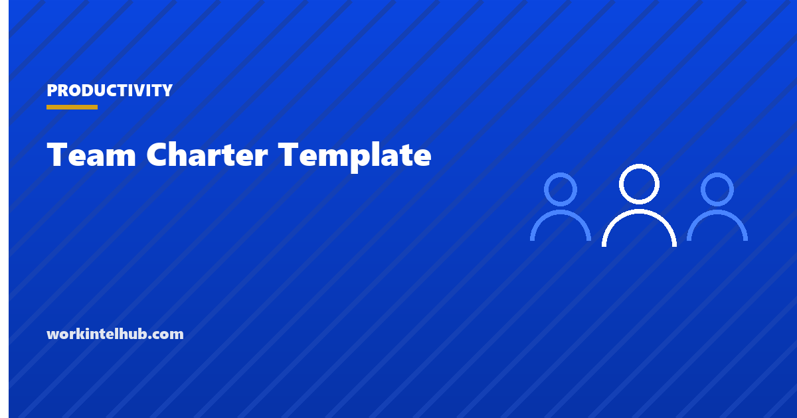

Team Charter Template

A team charter is a one-page agreement that says why a team exists, what it owns and does not own, how it will know it is succeeding, what it may decide on its own, and how its members have agreed to work together. Most teams never write one, and most of the friction they experience later, the argument about who owns the incident channel, the decision that went up two levels because nobody knew it could be made, the meeting nobody wanted, traces back to a question the charter would have answered on day one.
The generator below writes a charter from your answers. The rest of the page covers the eight sections and what each prevents, the research on team effectiveness that the working-agreements section draws on, an example, and how to run the ninety-minute session in which a team writes its own.
Team charter generator
Nothing typed here leaves your browser. The charter is written to be one page: if a section runs long, it is probably two teams.
The eight sections and what each prevents
| Section | Question it answers | What goes wrong without it |
|---|---|---|
| Purpose | Why does this team exist? | The team optimises for what is measured rather than what it is for |
| Members and roles | Who is on it and what does each person hold? | Two people own the same thing; nobody owns the rest |
| Scope | What do we own, and what do we not? | Boundary disputes with neighbouring teams; work that falls between them |
| Success measures | How will we know it is working? | Activity mistaken for progress; the sponsor and the team judging by different numbers |
| Decision rights | What do we decide alone, with the sponsor, or escalate? | Decisions escalate by default; the team waits |
| Working agreements | How do we treat each other and our work? | Unspoken norms enforced inconsistently; new members guess |
| Rhythm | When do we meet, and for what? | Meetings accrete; the calendar becomes the process |
| Review | When does this document get revisited? | The charter describes a team that no longer exists |
Scope is the section teams skip and regret. Writing "out of scope" with the name of the team that does own the thing is what stops the boundary argument, and it is the sentence that most often needs the sponsor in the room. Decision rights are the second most skipped and the most valuable: a team that knows it can set its own on-call rota without asking moves faster than one that assumes it cannot.
What the research says belongs in the working agreements
Google's Project Aristotle, published through Google re:Work, studied 180 of its teams over two years and found that who was on a team mattered less than how the team worked together. Five dynamics distinguished the effective teams, in order of importance: psychological safety (members can take risks and admit mistakes without being punished), dependability (people do what they say), structure and clarity (clear roles, plans and goals), meaning (the work matters to the people doing it) and impact (the team can see that its work makes a difference). Psychological safety, the concept developed by Amy Edmondson in the 1990s, was by far the strongest.
A charter addresses four of the five directly. Purpose and success measures are meaning and impact; roles, scope and decision rights are structure and clarity; the working agreements are where dependability and psychological safety are made explicit. The agreements that do the most work are the concrete ones: how decisions are recorded, how disagreement is handled, how mistakes are reviewed, when people are expected to be reachable and when they are not. "We respect each other" is a value; "post-incident reviews are blameless and name systems, not people" is an agreement someone can point to.
The rhythm section is where the meeting agenda and the one-on-one live, and the success measures are where quarterly OKRs attach. The charter is the stable document; the OKRs change each quarter.
An example charter
A platform reliability team of five in a mid-sized software company.
- Purpose. Keep the platform available and make every incident cheaper than the last.
- Scope. In: production incident response, post-incident reviews, monitoring and alerting standards, on-call. Out: feature development (product teams), customer communication during incidents (Support), infrastructure cost (Finance and the cloud team).
- Success. Availability 99.9 per cent monthly; mean time to restore under 30 minutes; every Sev1 reviewed within five working days; on-call pages per week trending down.
- Decision rights. Alone: alert thresholds, rota, runbooks, tooling under $10,000. With the sponsor: SLA changes, spend above that. Escalate: conflicts with the product roadmap.
- Agreements. Blameless reviews; decisions written in the channel within a day with the reason; disagree in the meeting, commit after; core hours 10 to 3 in the team's main time zone; anyone can declare an incident and nobody is criticised for a false alarm; on-call is compensated and never more than one week in four.
- Rhythm. Weekly 25-minute sync, monthly review with the sponsor, quarterly charter review.
It fits on a page. The on-call agreement in the last bullet is the kind of line that pays for the exercise: it is the answer to a question that would otherwise be asked in the middle of a bad week.
Running the chartering session
- Ninety minutes, the whole team, the sponsor for the first thirty. The sponsor states the purpose and the boundaries as they see them, answers questions, and leaves. The team writes the rest.
- Purpose first, silently. Each person writes the team's purpose in one sentence; read them aloud; converge. Disagreement here is the most valuable finding of the session.
- Scope as two lists. Owned and not owned, with the owning team named for each "not". Anything the room cannot place goes to the sponsor.
- Measures, then decision rights. Two to four numbers the sponsor would accept. Then the three-tier decision list; err on the side of "alone".
- Agreements from friction. Ask "what has annoyed you about how we work in the last month?" and write the agreement that would have prevented each answer. Concrete, testable, no more than eight.
- Rhythm and review date. Set the meetings and a date three months out.
- Sign it. Each member's name on the page. Put it where new members will find it, and read it with them in their first week alongside the 30-60-90 day plan.
Review the charter when membership changes, when the purpose changes, or when any section stops describing reality. A charter that has not been touched in a year describes a team that no longer exists.
Key takeaways
- A team charter is one page: purpose, members and roles, scope in and out, success measures, decision rights, working agreements, rhythm and a review date.
- Scope with named owners for what the team does not own stops boundary disputes; decision rights stop decisions escalating by default.
- Google's Project Aristotle found psychological safety, dependability, structure and clarity, meaning and impact distinguish effective teams; a charter addresses all but the first directly and the first through concrete agreements.
- Write agreements someone can point to: how decisions are recorded, how disagreement ends, how mistakes are reviewed, when people are reachable.
- Write it in a ninety-minute session with the sponsor present for the first thirty, and have every member sign it.
- Review it quarterly and whenever membership or purpose changes.
Frequently asked questions
What is a team charter?
A short document, usually one page, that states why a team exists, who is on it and in what roles, what it owns and does not own, how success is measured, what it can decide on its own, how members have agreed to work together, and when they meet. It is written by the team, with the sponsor's input on purpose and boundaries, and reviewed periodically.
What should a team charter include?
Eight sections: purpose, members and roles, scope (in and out, with the owner named for anything out), success measures, decision rights (alone, with the sponsor, escalate), working agreements, meeting rhythm, and a review date. If it runs past a page, it is probably describing two teams.
What is the difference between a team charter and a project charter?
A project charter authorises a piece of work with a scope, budget, schedule and sponsor, and ends when the project does. A team charter describes a standing team: its purpose, boundaries and ways of working, which persist across projects and are reviewed rather than closed.
Who writes the team charter?
The team, in a facilitated session, with the sponsor stating the purpose and boundaries at the start. A charter handed down by a manager is a job description; one written by the members is an agreement they will hold each other to.
What are examples of team working agreements?
Decisions are written in the channel within a day with the reason; disagree in the meeting and commit after it; post-incident reviews are blameless; core hours are 10 to 3 and nobody is expected to respond outside them; anyone can call an incident without criticism for a false alarm; on-call is never more than one week in four. The test is whether someone could point to the agreement when it is broken.
How often should a team charter be reviewed?
Quarterly, and whenever a member joins or leaves, the purpose changes, or a section stops describing how the team actually works. New members should read it in their first week.